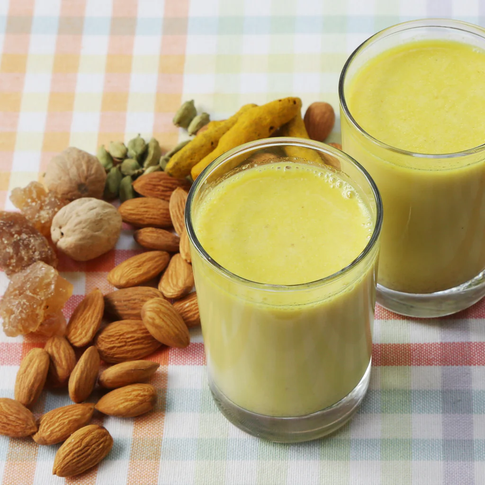

Badammix
Back to Homepage

Description
Badammix is a traditional Indian sweet made primarily from almonds (badams) and sugar. It is known for its rich, nutty flavor and is often enjoyed during festivals and special occasions.
Ingredients
- Almonds (Badams)
- Sugar
- Cardamom powder
- Ghee (clarified butter)
- Saffron strands (optional)
Steps
- Soak the almonds in hot water for about an hour to soften them.
- Peel the skins off the almonds and dry them thoroughly.
- Grind the almonds into a coarse powder using a food processor or grinder.
- In a pan, heat ghee and add the ground almonds. Roast them on low heat until they turn golden brown and release a nutty aroma.
- Add sugar to the roasted almonds and mix well. Continue to cook until the sugar melts and combines with the almonds.
- Add cardamom powder and saffron strands (if using) for flavor. Mix thoroughly.
- Spread the mixture onto a greased surface or tray and flatten it out to your desired thickness.
- Allow it to cool and set. Once firm, cut it into squares or diamond shapes.
- Store in an airtight container and enjoy!